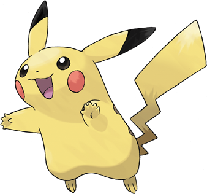

WHAT?
The Unofficial Pokemon Comparator is a repository of information on all 649 Pokemon. It includes their stats (HP, Attack, Defense, Special Attack, Special Defense, and Speed), types, sprites, colors, and abilities. You can sort various Pokemon you want to see and observe those Pokemon's properties individually in the 'dex' page or you can compare 2 Pokemon in the 'analysis' page .Click one of the links on the bottom to begin!
WHY?
Pokemon seemed like the most fun thing to do. Furthermore, Pokemon is actually very mathematical, and the amount of Pokemon is very expansive, so it made sense to use it for an analysis/comparison project.
WHO?
I wrote the HTML/CSS for all 4 pages, as well as the Python code used to analyze the Pokemon data. The data included CSV files of all the Pokemon's number values, their names, types, stats, and abilities. This data was provided by the open-source veekun pokedex (the csv files are on their GitHub). The Pikachu picture on the right was supplied by Bulbapedia.
HOW?
Go to the Analysis page and choose 2 Pokemon to compare. Then hit the "See How they Compare!" button and it should redirect you to a page with a rudimentary HTML table comparing the stats and other properties of the 2 Pokemon.
What did you learn ?
About styling, I learned that knowing the basic selector/class + property layout of CSS doesn't mean you know how to use it to make good-looking webpages...
About OS X, I learned that Mr. Brooks's web servers don't work. Blegh.
About web-scraping, I learned I sucked at it. I initially had a site that scraped the Pokemon data from smogon and tried to get Pokemon data from that index page. It was horrible and it took forever to make work and it still was terribly slow and there were exceptions and the webpage itself looked hideous and ugh. The supplied CSVs are much easier to work with and focus on the real work -- the analyzation.
Another thing I learned is that, with 2-dimensional lists, you can't do List[Item][ItemOfItem]; you have to do (List[Item])[ItemofItem], or put List[Item] into a variable Var and then do Var[ItemofItem].
Another thing I learned is that some kid in 10th period did -exactly- what I did, except it looked better and he used JavaScript buttons, too. That sucks.
P.S.: In this folder, I have a file named "testy.py". It's basically the same as this one, except it uses Python to generate 4 random pictures of Pokemon from serebii instead of the picture of Pikachu. I decided to get rid of it because sometimes the pictures don't line up nicely and it gets ugly fast.
I also learned the importance of generalization/noticing patterns in code-writing and reducing lines/time spent working with functions that go through these patterns for you. Breaking things up into functions makes everything much easier to work with and understand.
